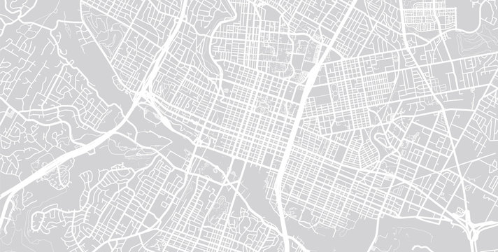

<div class="dialog-select-container">
  <section><h1>Seleccione una sede</h1></section>
  <div class="map-container">
    

    <div
      *ngFor="let marker of markers"
      class="map-marker"
      [style.top.%]="marker.top"
      [style.left.%]="marker.left"
      (click)="selectLocation(marker)"
      (mouseenter)="hoveredMarker = marker"
      (mouseleave)="hoveredMarker = null"
      [class.selected]="selectedLocation === marker"
    >
      <mat-icon>location_on</mat-icon>

      <div class="tooltip" *ngIf="hoveredMarker === marker">
        {{ marker.label }}
      </div>
    </div>
  </div>
  
  <div class="actions">
    <button class="button cancel-button" (click)="onDialogCancel()">
  Cancelar
</button>

<button class="button continue-button" (click)="onDialogSelectProduct()">
  Continuar
</button>
  </div>
</div>
